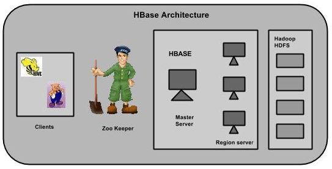

HBase在Hadoop的生态圈是扮演这一个重要的角色那就是 实时、分布式、高维数据 的数据存储；
Hbase和Hive在大数据架构中处在不同位置，Hbase主要解决实时数据查询问题，Hive主要解决数据处理和计算问题，一般是配合使用。
HBase是建立在Hadoop文件系统之上的分布式面向列的数据库，是一个数据模型,提供快速随机访问海量结构化数据.
HBase当前noSql（非关系型的数据库管理系统）数据库的一种,最常见的应用场景就是采集的网页数据的存储，是key-value型数据库.
HBase使用HDFS来持久化存储数据；为了提供行级数据更新查询，还是用了缓存等技术。
VS
在大数据架构中，Hive和HBase是协作关系，数据流一般如下图：
1、通过ETL工具将数据源抽取到HDFS存储；
2、通过Hive清洗、处理和计算原始数据；
3、HIve清洗处理后的结果，如果是面向海量数据随机查询场景的可存入Hbase
4、数据应用从HBase查询数据；
(1)
Hbase： Hadoop database 的简称，也就是基于Hadoop数据库，是一种NoSQL数据库，主要适用于海量明细数据（十亿、百亿）的随机实时查询，如日志明细、交易清单、轨迹行为等。
Hive：Hive是Hadoop数据仓库，严格来说，不是数据库，主要是让开发人员能够通过SQL来计算和处理HDFS上的结构化数据，适用于离线的批量数据计算。
(2)
Hive中的表是纯逻辑表，只是表的定义等，即表的元数据。Hive本身不存储数据，它完全依赖HDFS和MapReduce。这样就可以将结构化的数据文件映射为为一张数据库表，并提供完整的SQL查询功能，并将SQL语句最终转换为MapReduce任务进行运行。
而HBase表是物理表，适合存放非结构化的数据。
(3)
Hive是基于MapReduce来处理数据,而MapReduce处理数据是基于行的模式；
HBase处理数据是基于列的而不是基于行的模式，适合海量数据的随机访问。
(4)
Hive使用Hadoop来分析处理数据，而Hadoop系统是批处理系统，因此不能保证处理的低迟延问题；
而HBase是近实时系统，支持实时查询。
参考：https://www.zhihu.com/question/21677041 , taiwo的回答更适合做web的人了解。
HBase
类似于Google的BigTable，其分布式计算采用MapReduce，通过MapReduce完成大块的数据加载和全表扫描操作等。
文件存储系统采用HDFS，通过Zookeeper来完成状态管理协同服务。不过BigTable只支持一级索引，Hbase不仅支持一级索引，还支持二级索引。
在HBase中，表被分割成区域，并由区域服务器提供服务。区域被列族垂直分为“Stores”。Stores被保存在HDFS文件。
HBase组成

HBase有三个主要组成部分：客户端，主服务器(HMaster)和区域服务器(HRegion Server)。区域服务器可以按要求添加或删除。
主服务器(HMaster):类似与namenode/jobTrackers，用来管理区域服务器。包括，区域被分割后新区域的放置、区域服务器出问题后区域的移动（FailOver，故障转移）等。
客户端：只与zk、区域服务器打交道，不会联系主服务器。因此如果主服务器挂了，其他客户端仍可以提供服务。
两个Catelog表：Root和Meta表。Root表中存储了Meta表的位置。即Meta表的Region key。Meta表存储了所有Region的位置及每个Region所包含的RowKey的范围。Root表的存储位置记录在zookeeper中，Meta表的存储位置记录在Root表中。
Hbase已经无缝集成了HDFS，其中所有的数据最终都会通过DFS客户端API持久化到HDFS中。
当客户端发起一个查询数据的请求后，首先，客户端会先连接上zookeeper集群，获取-Root-表的存放在哪一个HRegionServer上。接着找到对应的HRegionServer后，就能够获取到-Root-表中对应的.Meta.表的位置。最后客户端根据.Meta.表存储的HRegion的位置到相应的HRegionServer中取对应的Hregion中的数据信息。经过一次查询后，访问Catalog表的过程就会被缓存起来，下次客户端就可以直接到相应的HRegion上获取数据。
一个集群中有多个区域服务器(HRegion Server)；一个区域服务器中有一个WAL（write Ahead Log，日志文件，用作数据恢复）和多个区域（HRegion）；一个区域中有Store；一个Store中有一个memStore和0到多个HFile（数据存储的地方）。
参考：https://blog.csdn.net/jiangtao_st/article/details/19499923